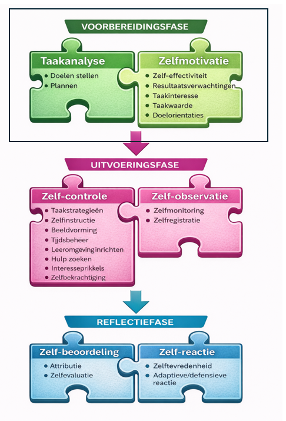
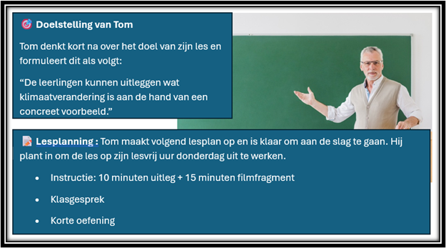
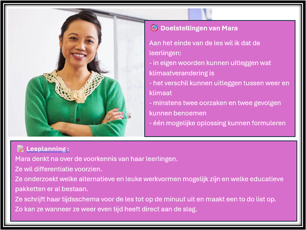
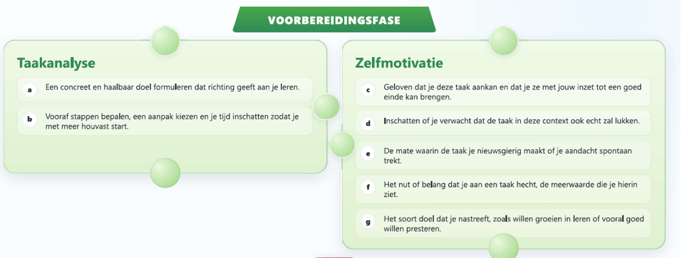
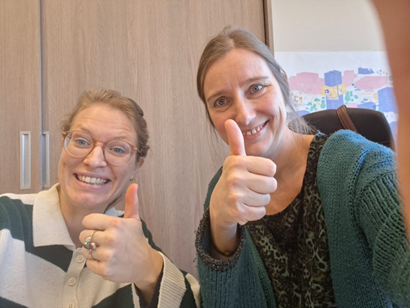

WEEK 1 – VOOR HET LEREN
Voorbereidingsfase: Taakanalyse & Zelfmotivatie
⏱ Tijdsindicatie: max. 60 minuten
Net als onze leerlingen willen we soms meteen starten. Maar om goed te beginnen, moeten we eerst weten: waar we naartoe willen, hoe we daar geraken en waarom we eraan beginnen.
1. Even in de spiegel kijken

Hoe start jij aan een taak?
Ik vlieg meteen in een taak — 1 · 2 · 3 · 4 · 5 — Ik pluis eerst alles goed uit
Denk aan jouw huidige leerdoel (besproken in het startgesprek):
- Wanneer helpt jouw spontane aanpak je vooruit?
- Wanneer werkt ze tegen je?
2. Het opzet van vandaag
Taakanalyse
Doel, stappen, strategie en tijd.
Zelfmotivatie
Geloof, nut, interesse en doelen die je dragen.
Aan de slag
Je vertaalt dit naar je eigen leerdagboek.

Filmpje
Nathalie en Griet leggen het je graag uit.
Klik hier om het filmpje te bekijken (duur: 3 minuten)
Inhoud
We zoomen vandaag eerst in op de cluster taakanalyse, die twee ZRL-vaardigheden omvat. Daarna gaan we dieper in op de cluster zelfmotivatie, die 5 ZRL-vaardigheden omvat. We leren dus al 7 vaardigheden kennen en herkennen bij onszelf.
Tip : Noteer eventueel de 7 termen en de essentie ervan in een apart boekje voor jezelf, om ze beter te onthouden.
3. Taakanalyse
A. De theorie

In dit deel bekijken we expliciet wat taakanalyse inhoudt en waarom die zo belangrijk is in de voorbereidingsfase.
We leggen dit uit door middel van de WWWH, expliciete ondersteuning dus!
WAT?
Taakanalyse betekent:
- Een concreet doel formuleren
- Stappen bepalen
- Strategie kiezen
- Tijd inschatten
In een vertrouwde context is dat makkelijker. Bij nieuwe of complexe taken is ondersteuning bij plannen cruciaal.
WAAROM?
- Een helder doel geeft richting.
- Een concreet plan vergroot de kans op uitvoering.
- Plannen geeft rust en overzicht.
- Plannen is altijd herplannen.
WANNEER?
Voor je start. Stop → Denk → Doe.
Belangrijk
Het gaat niet om je plan perfect volgen. Het gaat om houvast creëren.
HOE?
- Formuleer je doel concreet en haalbaar binnen deze vier weken.
- Werk met tussenstappen.
- Plan je eerste actie in je agenda.
- Maak je acties afvinkbaar.
B. Een voorbeeld

We kijken even naar een voorbeeld van twee leraren die op een heel andere manier een zelfde taak aanpakken. In wie herken jij jezelf het meest?
Tom & Mara
Tom en Mara willen beiden één lesuur over klimaatverandering voor hun leerlingen (6de leerjaar) uitwerken. Denk na over de voor- en nadelen van elke aanpak.



C. Aan de slag

Nu vertaal je dit naar je eigen leerdoel en werk je verder in je leerdagboek.
Remember: Indirecte ondersteuning gaat over het oefenen in een krachtige leeromgeving.
4. Zelfmotivatie
A. De theorie
In dit deel kijken we expliciet naar hoe motivatie het starten van leren beïnvloedt, alsook hoe je dit kan sturen. Zelfmotivatie beïnvloedt het gestart geraken. Maar, motivatie kan flucteren en we hebben hier zelf ook een hand in!
WAT?
Zelfmotivatie gaat over:
- Geloof ik dat ik dit kan?
- Verwacht ik dat dit lukt in deze context?
- Vind ik dit nuttig of belangrijk?
- Vind ik dit interessant?
- Wil ik dit voor mezelf bereiken?
Motivatie is geen vast gegeven. We kunnen ons denken over een taak - en zo onze motivatie - actief beïnvloeden.
Vijf vaardigheden
- 1 Competentiegevoelens
- 2 Resultaatsverwachting
- 3 Taakwaarde
- 4 Taakinteresse
- 5 Doeloriëntatie
WAAROM?
Wat je gelooft, bepaalt wat je doet. Hoe sterker je motivatie, hoe groter de kans dat je effectief start en volhoudt.
WANNEER?
Voor je start — en telkens wanneer je dreigt af te haken.
HOE?
- Activeer eerdere succeservaringen.
- Benoem mogelijke obstakels vooraf.
- Maak het nut expliciet.
- Verbind je doel met iets wat je belangrijk vindt.
Dit is niet evident…
… maar wél heel belangrijk.
B. Een voorbeeld
We bekijken door middel van een voorbeeld hoe motivatie een rol speelt bij leraren die voor verandering staan.
Voorbeeld: team De Horizon
In Basisschool De Horizon beslist de directie om een nieuwe leesmethode te integreren. Wie van onderstaande leraren zal zich het meest inzetten voor deze verandering? Denk eerst zelf na vooraleer je onze reflecties beluistert.

C. Aan de slag
Maar hoe zit het met jouw (zelf)motivatie?
Werk verder in je leerdagboek, en probeer zo je motivatie te verhogen!

Ga terug naar je leerdagboek.
5. Uitsmijters
Wil je je verder verdiepen? Hieronder vrijblijvend extra materiaal rond motivatie.
Graag nog eens de 7 ZRL-vaardigheden op een rijtje? Probeer de juiste ZRL-vaardigheid op de juiste zin te kleven. Scroll terug om jezelf te corrigeren.

6. Vooruitblik
Volgende week starten we met de uitvoeringsfase – tijdens het leren. We nemen dan terug een hele reeks ZRL vaardigheden onder de loep.

Tot volgende week. Veel succes!
